Engineering Projects
Heat-Activated Deployable Structures
Combined heat-shrinkable thermoplastics with 3D printed planar shapes to generate specific folded 3D structures, published to AEM.
View Publication (AEM) →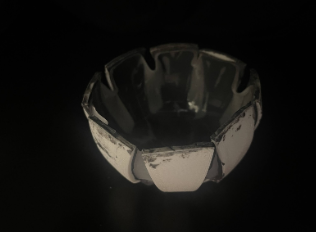
Collaborative Robotics Experiments
Worked on end-effectors (design, fabrication, rapid prototyping) for experiments with slinky manipulation and created basic python move functions for LLM to access as “toolbox”.
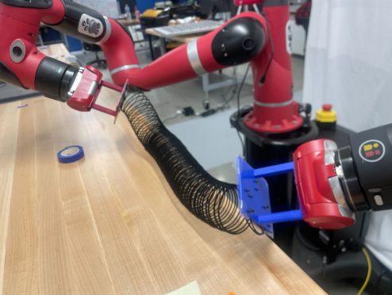
Multi-Modal Hidden Object Detection
Sensor fusion approach to detecting occluded fruits, worked on sensor module and experiments with thermal change.
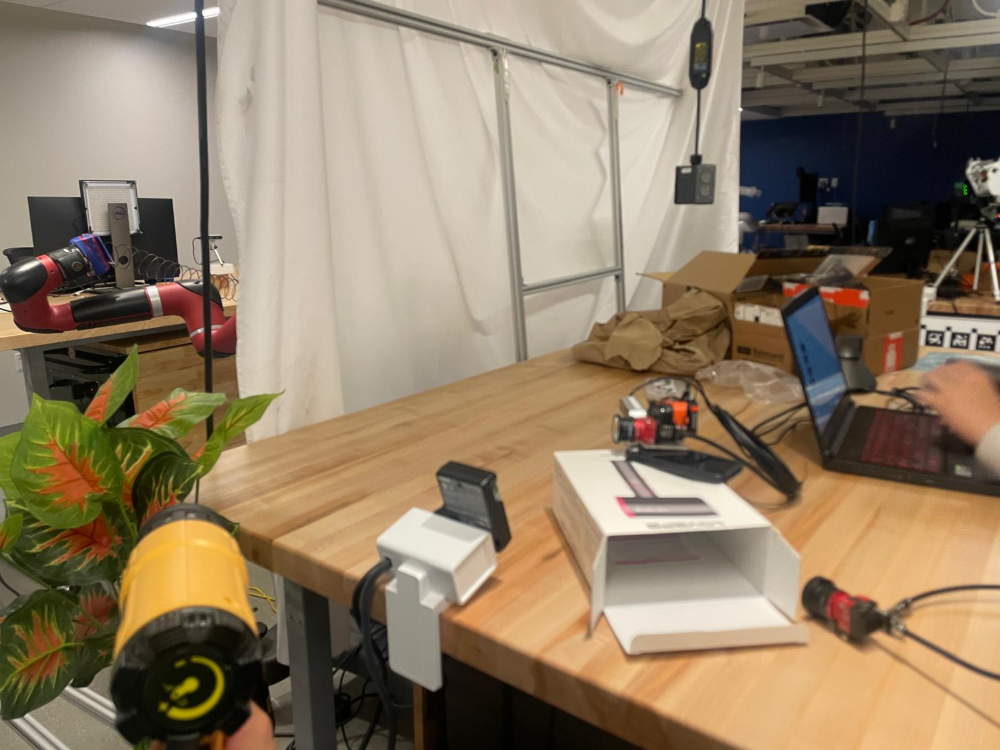
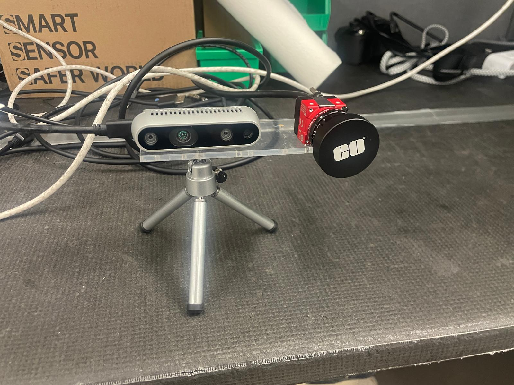
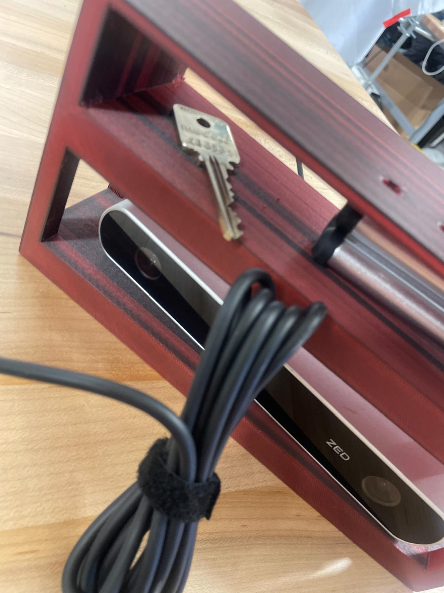
UCLA FSAE - Bruin Racing
Worked on battery pack cooling system for electric racecar. Designed ducts, calculated fan curve operating points, tested hydrophobic mesh, performed basic CFD analysis on cell segments.
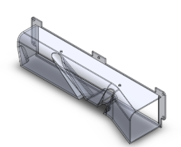
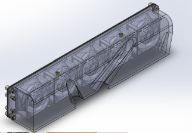
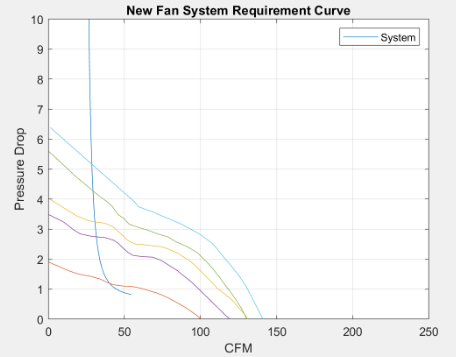
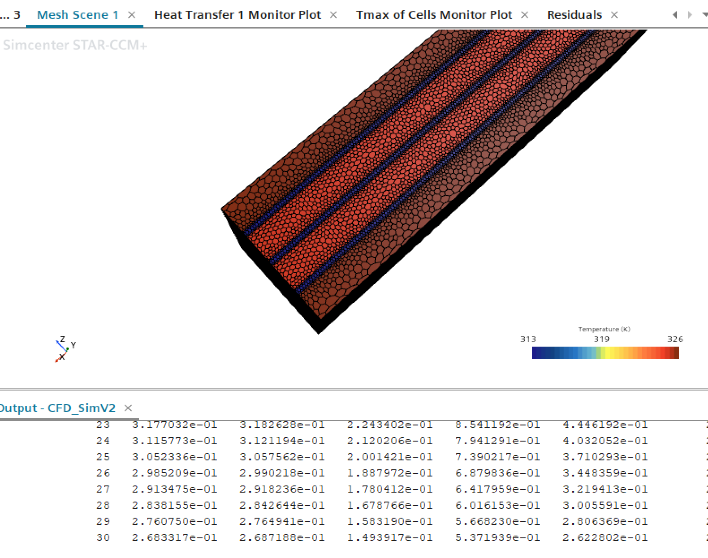
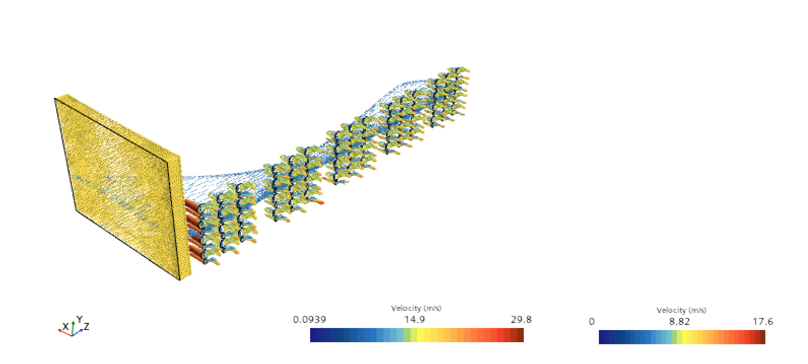
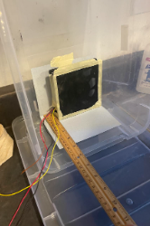
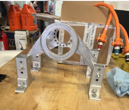

Autonomous Burger Assembly/Delivery Robot - UCLA Capstone
Built and programmed an autonomous differential-drive robot to perform LiDAR-based course navigation, computer vision-guided customer recognition, and mechanical manipulation for burger assembly that ranked first in the capstone class.

Autonomous Trash-Catching Robot
Building a trash-catching robot where the trashcan is mounted on a linear rail and 2D camera feedback triggers Arduino stepper motor control based on computer vision motion tracking to catch crumpled trash. Currently completed motor selection, mechanical and electric circuit design, FSM-based control programming structure, bridging to Stanford cluster for Linux compute, and ROS2 environment setup with Podman containers.
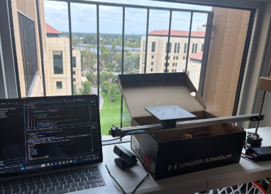
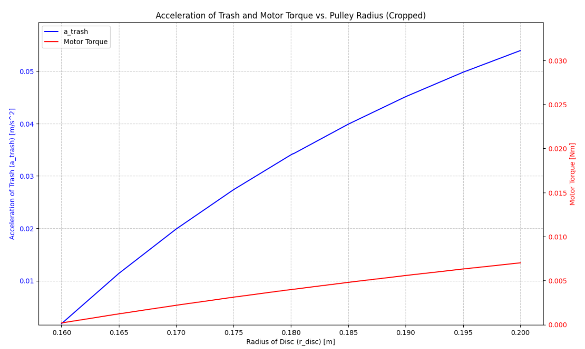